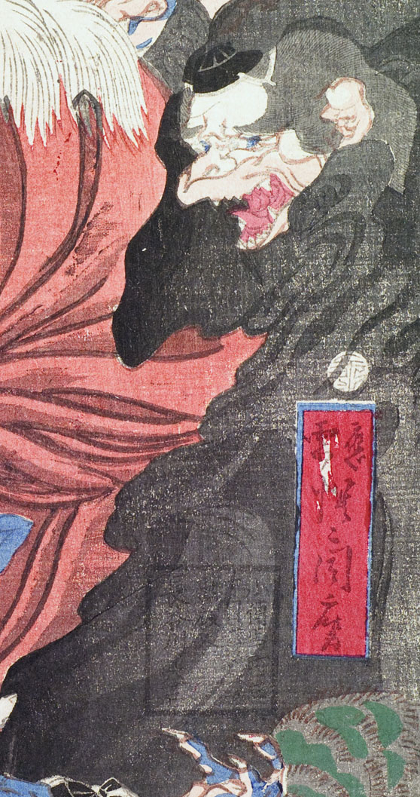

天狗。髪を肩まで垂らし、額に頭襟を着けている。耳が大きく、目は青い。口は嘴のようで、大きく開いて、鋭い歯を覗かせている。黒い衣を全身にまとっている。
著作者：猩々周麿（河鍋暁斎）／出典：親書誌：U426_nichibunken_0130：僧正坊と牛若丸；ソウショウボウトウシワカマル／日付：2009／資源識別子：U426_nichibunken_0130_0001_0003
Copyright (c)2010- International Research Center for Japanese Studies, Kyoto, Japan. All rights reserved.